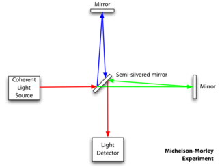
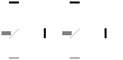

In the 19th century, physicists generally believed that just as water waves must have a medium to move across (water), and audible sound waves require a medium to move through (air), so also light waves require a medium, which was called the "luminiferous” (i.e. light-bearing) “ether”.
The Michelson-Morley experiment became what might be regarded as the most famous failed experiment to date and is generally considered to be the first strong evidence against the existence of the luminiferous ether. Michelson was awarded the Nobel Prize in 1907, becoming the first American to win the Nobel Prize in Physics.
Physicists had calculated that, as the Earth moved in its orbit around the sun, the flow of the ether across the Earth’s surface could produce a detectable "ether wind". Unless for some reason the ether were always stationary with respect to the Earth, the speed of a beam of light emitted from a source on Earth would depend on the magnitude of the ether wind and on the direction of the beam with respect to it. The idea of the experiment was to measure the speed of light in different directions in order to measure the speed of the ether relative to Earth, thus establishing its existence.
To measure the velocity of the Earth through the ether by measuring how the light changed, Albert Michelson (1852-1931) designed a device known now as an interferometer. It sent the beam from a single source of light through a half-silvered mirror that was used to split it into two beams traveling at right angles to one another. After leaving the splitter, the beams traveled out to the ends of long arms where they were reflected back to the middle by small mirrors. They then recombined on the far side of the splitter in an eyepiece, producing a pattern of constructive and destructive interference based on the length of the arms. Any slight change in the amount of time the beams spent in transit would then be observed as a shift in the positions of the interference fringes.
Michelson had done a preliminary version of the experiment in 1881. After accepting a position at Case School of Applied Science in Cleveland, he began a collaboration with Edward Morley, a professor of chemistry at neighboring Western Reserve College. The apparatus they built floated in a trough of mercury, which allowed it to be rotated slowly. As it rotated, according to the ether theory the speed of light in each of the two perpendicular arms would change, causing a shift in the interference pattern. The results of the experiment indicated a shift consistent with zero, and certainly less than a twentieth of the shift expected if the Earth’s velocity in orbit around the sun was the same as its velocity through the ether.
Other versions of the experiment were carried out with increasing sophistication, but the Michelson-Morley measurements were the first with sufficient accuracy to challenge the existence of the ether. The explanation of their null result awaited the insights provided by Einstein’s theory of special relativity in 1905.
  Back to main menu